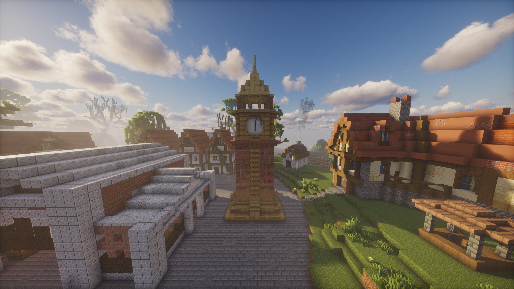

Minecraft Schematics
Download custom-made builds for your world.

Clock Tower
A tall medieval-style clock tower perfect for towns or spawn areas.
DownloadHow to Use Schematics
- Install WorldEdit or Litematica
- Place the schematic file in your schematics folder
- Load it using the mod
- Paste it into your world